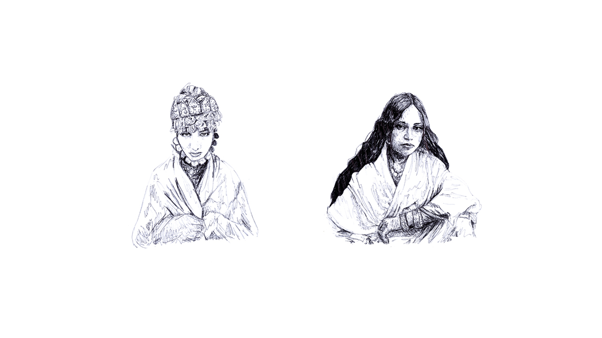
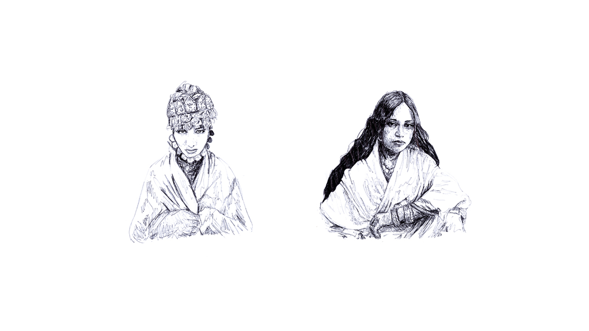

Engal Sama
2015-present
In collaboration with Novart, Skale.
After the fire


La Ciguapa
Metro54
“This is a Takeover: Researching Remix” Dutch Design Week (2019)
photos and installation funded by Stimuerlingsfonds
photos. Sydney Rahimtoola
photo mural design. Malik Saïb-Mezghiche
installation. Philip Astanova
UNDO
2018-present
*ongoing publication
written, developed by: Sydney Rahimtoola
documentation by: Sydney Rahimtoola
design: Malik Saïb-Mezghiche
In UNDO, Sydney Rahimtoola identifies the dilemmas present in the representation of black and brown people (POC) in photography. These dilemmas are a “primitive” visual language present in our imagination concerning POC, hindering our experience with reading visual content. “Primitive” identifiers in images have historically been used to harmfully categorize, thus marginalize black and brown people. Sydney Rahimtoola go in depth with how and why these “primitive” identifiers were birthed, and how it remains in our consciousness, using the colonial past as evidence. Most importantly, Sydney Rahimtoola reflect how black and brown artists use their creative agency to reclaim and re-narrate these identifiers.
The key elements to demonstrate these points is formulated with an in-depth analysis to J.D. ‘Okhai Ojeikere’s Hairstyles archive. Through this archive, Sydney Rahimtoola conclude how J.D. ‘Okhai uses photography to maintain agency and ownership to his country’s hair culture in Nigeria, and the urgency for us as an audience to hold ourselves accountable from identifying his content with primitive identifiers.
Keeping hair as the focus point, Sydney Rahimtoola continue to apply how black and brown artists today resist these stereotyped implications using image and black folklore as tools of reclamation. These tools deal with how POC signify and communicate using hair, and how this means resistance and necessity for the sake of their self expression and identity. It includes: Black Twitter, “ratchet” culture, memes, and black queer culture.
The design took its shape as a series of colorful, gradient backgrounds matched with research texts co-existing alongside an visual archive from online of hair styles, memes, and video stills.


Arabadabra
publication design for Leyla-Nour Benouniche's graduation thesis.


 
